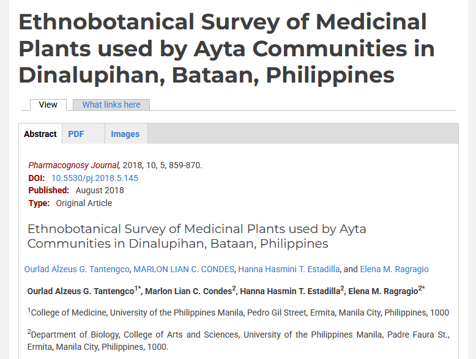

Hi! I am Marlon Condes and I graduated BS Biology in University of the Philippines - Manila. During my stay in the University, we did a lot of projects and laboratory reports regarding both animal and plant life. Our culminating project is actually an Undergraduate Thesis. Thanks to our adviser/mentor, he was able to publish it online. Here it is if you want to check it out: Ethnobotanical Survey of Medicinal Plants used by Ayta Communities in Dinalupihan, Bataan, Philippines
Moreover, I'm also interested in learning a lot of stuff! I've joined a number of extra-curricular activities in the University, including a Dance Varsity and a Department Choir! I've also obtained my National Certificate II for Barista last 2023! And currently (2025), I'm slowly trying to learn Web Development!